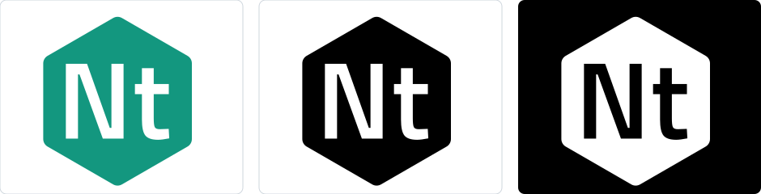
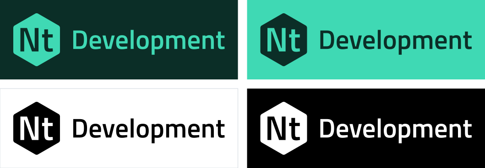

Nt Brand Guide
How to use the Nt name and logo, including the Nt Development logo and version names.
This guide covers the Nt logo, its colour variations, the secondary Nt Development logo and how version names such as Nt 6 are written. The artwork lives in assets/brand/ in the source tree and is MIT licensed like the rest of Nt.
Note: Nt is a clean-room implementation of the Qt 6 API. It is not affiliated with The Qt Company, and the Nt logo and name must never be presented as, or mistaken for, the Qt logo or name.
Primary Logo
The primary logo is the Nt mark: a teal hexagonal "nut" holding a large capital N and a smaller lowercase t that share a baseline. The letters are set in Titillium Web Semibold (see Typeface). It stands for the Nt libraries, the build tools and the project itself, in documentation, packages, slides and web pages.

Colour Variations
Version | Use | File |
|---|---|---|
Teal | The default. Use it on white or very light backgrounds. |
|
Black on white | Letterheads, printing in one colour, and any place the brand colours are not available. |
|
White on black | On top of photographs and other busy or colourful surfaces. |
|
Secondary Logo: Nt Development
The Nt Development logo is the Nt mark followed by the word Development. Use it only where it must be told apart from released, packaged builds of Nt: development snapshots, nightly builds, preview documentation and contributor material. In every other place use the primary logo.

Version | Use | File |
|---|---|---|
Neon on pine | The default. Place it on a pine background. |
|
Pine on neon | Place it on a neon background. |
|
Black on white | One-colour printing, or where the brand colours are not available. |
|
White on black | Photographs and other colourful surfaces. |
|
The files include their background rectangle and an even margin on every side, so that they can be placed as they are. The word Development is set in Titillium Web Semibold and, like the letters of the mark, is converted to outlines, so the files do not need the font installed and are ready for print.
Typeface
Nt uses Titillium Web Semibold for the letters of the mark, the word Development and headings in brand material. Titillium Web is licensed under the SIL Open Font License 1.1, a copy of which is in assets/brand/OFL-TitilliumWeb.txt. It is a squared, geometric sans with a lowercase t that is clearly shorter than the capital N; that difference in height is part of the mark.
Colours
Name | Hex | Use |
|---|---|---|
Nut Teal |
| The hexagon of the primary logo, and links |
Nut Neon |
| The mark on dark backgrounds, and the background of the pine variation |
Pine |
| Background of the neon variation, and text on neon |
Black |
| One-colour logos |
White |
| The letters in the mark, and one-colour logos on dark backgrounds |
The white letters have a contrast ratio of 3.6:1 against Nut Teal, above the 3:1 that WCAG asks for graphical objects. Do not use a lighter teal behind white letters. In the one-colour marks the letters are cut out of the hexagon, so they show whatever is behind them and the marks can be placed on any background.
Size and Clear Space
Keep a margin around the logo of at least one quarter of the height of the mark. Keep other text, images and page edges out of it.
Do not show the mark smaller than 16 px (or 5 mm) high. Do not show the Nt Development logo smaller than 32 px (or 10 mm) high.
Scale the logo in proportion. Prefer SVG; where a bitmap is needed, export it at twice the displayed size.
Names and Versions
Write | When |
|---|---|
Nt | The project, in running text. It is pronounced "nut". |
Nt 6 | A version of Nt in running text and headings, with a space, as in "Qt 6". The major number is the Qt major version whose API Nt implements, and Nt's own releases are numbered to match: the current version, such as 6.1.0, is in the |
Nt6 | Code, paths, repository and package names, without a space, as in |
Nt Development | A development build of Nt, shown with the Nt Development logo. Write "Nt 6 Development" when the version matters, and keep Nt 6 and Development in the same style. |
Nt Core, Nt Network | Modules. Their classes keep Qt's names, such as |
The logo is the same for every version. Do not put the version number in the mark; write it next to the logo in text instead.
Do and Don't
Do use the supplied files, unchanged.
Do use the black or white version when the colour version would be hard to see.
Don't stretch, rotate, outline, shadow or recolour the logo.
Don't redraw the letters, enlarge the t to match the N, or set the logo in another typeface.
Don't use the Nt Development logo for a released version of Nt.
Don't place the logo on a background that makes it hard to read.
Don't combine the logo with the Qt logo, or use Qt's green, its cut-corner shape or lettering that makes Nt look like a Qt product.
Download Assets
Every logo is an SVG file. The whole set is in the assets/brand folder of the repository, or download a single file here:
Logo | Teal or neon on pine | Pine on neon | Black on white | White on black |
|---|---|---|---|---|
Nt | - | |||
Nt Development |


See also Signals and Slots.